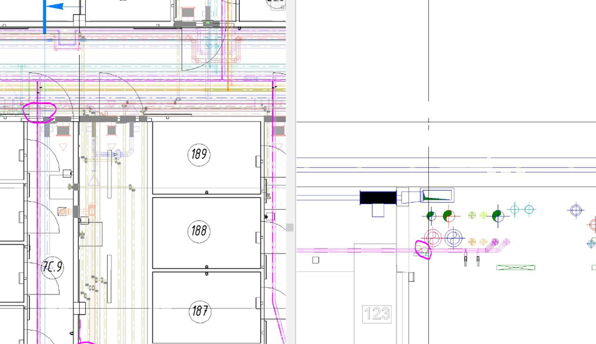
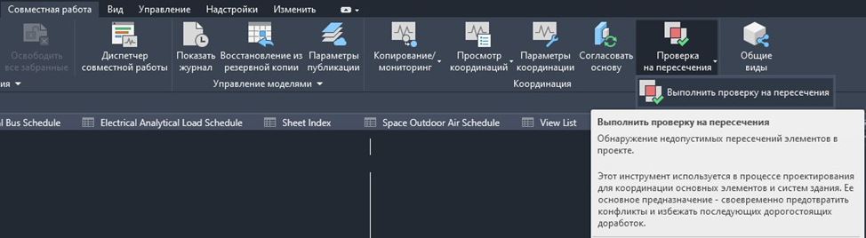
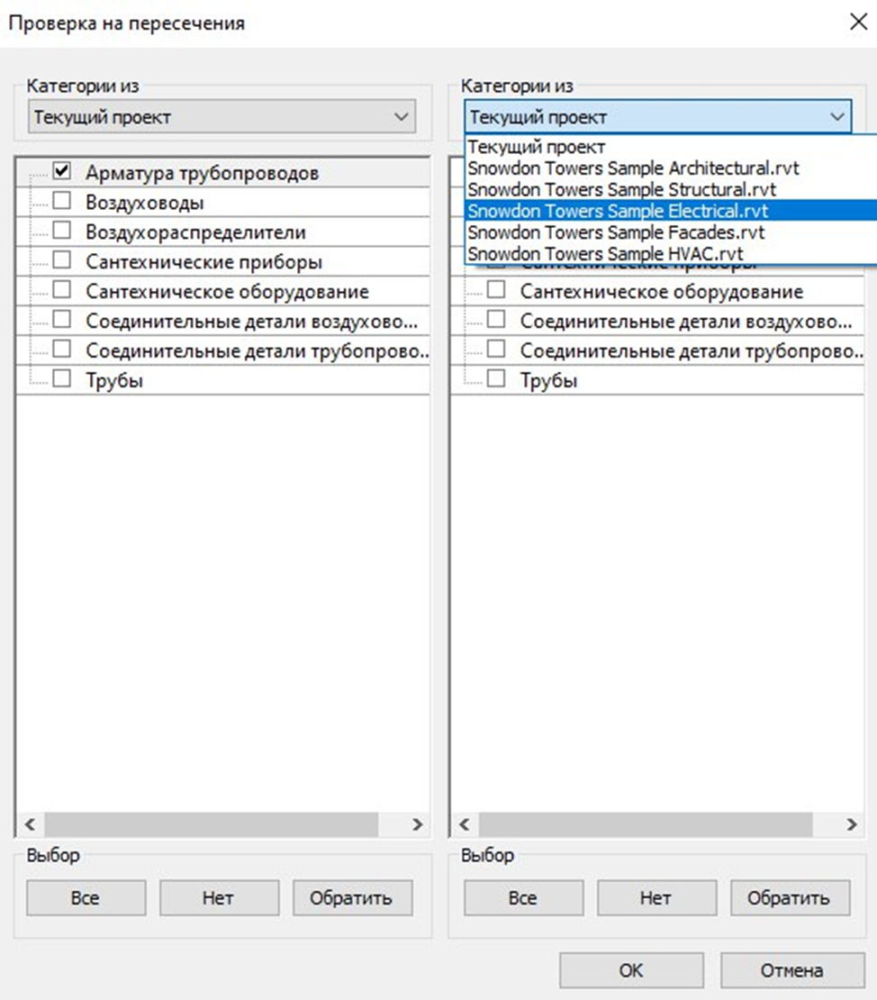
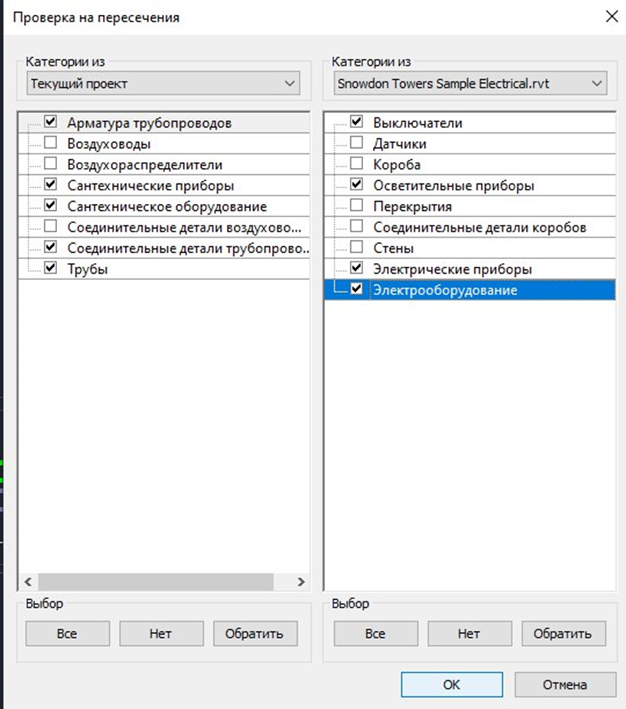
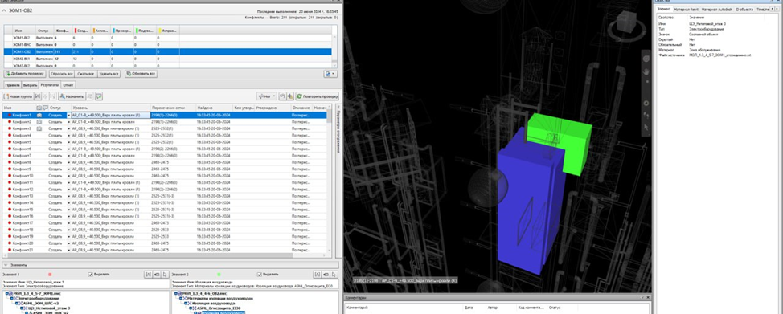

Проверка коллизий, согласование с ОВ, ЭМ, архитектором

Почему ВК одним из первых прокладывает канализацию
Раздел «Водоснабжение и канализация» (ВК) является одним из наиболее критичных с точки зрения координации с другими разделами проекта. Это связано с жесткими требованиями к уклонам, минимальным расстояниям и невозможностью произвольного изменения трассировки. Раннее и грамотное согласование трасс позволяет избежать коллизий на стройке и сократить сроки проектирования.
Приоритетность прокладки канализационных систем
Канализационные трубопроводы обладают наименьшей гибкостью при трассировке по сравнению с другими инженерными системами:
- Электрокабели могут изменять траекторию с малыми радиусами.
- Воздуховоды допускают изменение формы сечения, применение переходов и обводов.
- Канализационные трубы должны соблюдать постоянный уклон, не допускают резких поворотов под 90° и имеют жёсткие ограничения по высотным отметкам.
Системы канализации должны занимать приоритетное положение в общих трассах и шахтах. Их трассировку необходимо согласовывать в первую очередь наряду с вентиляцией.
Матрица пересечений: Что искать
Вам не нужно проверять все со всем. Есть критические точки, где ошибки фатальны.
1. ВК и ОВ (Отопление и Вентиляция)
Наиболее частые коллизии возникают в межпотолочном пространстве.
Типовой конфликт: пересечение канализационного стояка или магистрали с воздуховодом большого сечения.

Принцип разрешения:
- Напорные трубопроводы (ХВС, ГВС) должны обходить воздуховоды.
- Воздуховоды должны обходить безнапорную канализацию, так как изменение уклона последней невозможно, важно также чтобы оставался доступ к ревизиям и прочисткам.
2. ВК и ЭОМ (Электрика)
Ключевое правило: Трубопроводы с водой не должны располагаться над электрооборудованием, кабель-каналами, щитами.
Решение при неизбежном пересечении:
- Разведение в плане на расстояние не менее 100 мм.
- При пересечении по высоте - обязательное применение изоляция для трубопроводов, защита от конденсата. При прокладке проводов и кабелей параллельно горячим трубопроводам – провода и кабели должны быть защищены от воздействия высокой температуры.
- Использование сварных или паяных соединений на участке пересечения.
3. ВК и АР (Архитектура)
- Проемы: Проверка на пересечение со створками дверей, окнами.
- Высота помещений: Учет габаритов труб с изоляцией в пределах установленных высот помещений.
- Шахты: Обеспечение регламентированных размеров шахт для монтажа и обслуживания (минимальный зазор 100 мм от трубы до стенки шахты).
4. ВК и КР (Конструктив)
- Пересечение с несущими элементами: запрещено самовольное выполнение отверстий в балках, колоннах, ригелях. Трассировка должна осуществляться под или между несущими конструкциями.
- Выпуски из здания: Обеспечение зазора не менее 0,2 м между выпуском канализации и строительными конструкциями (п. 15.2.3 СП 30.13330.2020).
- Гильзование: Все проходки через строительные конструкции выполняются в гильзах, диаметр которых на 20-50 мм больше диаметра трубы.
Инструменты проверки (Revit и Navisworks)
Глазами проверить 5-этажный дом очень сложно или почти невозможно. Используйте для этого специальные инструменты.
Вариант А. Проверка внутри Revit
Рекомендуется для оперативной проверки на этапе рабочего проектирования.
Перейдите на вкладку «Совместная работа» → «Проверка пересечений».

В левом столбце выберите категории из текущей модели (например, арматура трубопроводов, сантехнические приборы, сантехническое оборудование, трубы).

В правом столбце выберите категории из связанных файлов (выключатели, короба, осветительные приборы, электрические приборы, электрооборудование).

Запустите проверку. Анализируйте список конфликтов, переходя к проблемным элементам.
Вариант Б. Navisworks
Применяется на этапе комплексной координации перед выпуском проекта.

- Импортируйте файлы всех разделов в формате NWC/NWD.
- Используйте модуль Clash Detective.
- Настройте тесты: например, «Трубы ВК» и «Воздуховоды ОВ».
- Установите допуск (Tolerance) 10-20 мм для учёта толщины изоляции и крепежа.
- Результаты классифицируйте по статусам: Новые, Активные, Устранённые, Одобренные
Порядок согласования и выдачи заданий
1. Задание Архитекторам (Отверстия и Шахты)
Срок: выдается одним из первых среди заданий смежникам.
Содержание:
- Четкие габариты шахт с учетом монтажного зазора.
- Расположение ревизионных люков, обеспечивающих доступ к запорной арматуре, ревизиям, счётчикам.
- Отметки и размеры отверстий в перекрытиях и стенах.
2. Задание для конструкторов (гильзы, закладные)
Срок: максимально срочно, до начала работ по устройству фундаментов и монолитных конструкций.
Содержание:
- Диаметр и координаты гильз под выпуски канализации и водопровода через фундаменты, стены, перекрытия.
- Диаметр гильзы: как правило, на 2 типоразмера больше диаметра трубы.
3. Задание для электриков (Уравнивание потенциалов)
Содержание:
- Требования по заземлению металлических трубопроводов.
- Согласование мест установки токопроводящих вставок для пластиковых труб в системах уравнивания потенциалов (СУП) в санузлах.